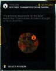
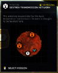

摧毁传输网络
Destroy Transmission Network
主体
Optional

“据悉，机器人的本地数据传输天线应该就在这里。
— 任务 简报
摧毁传输网络 是 机器人 主要目标, and also a 可选目标 on 特殊 "Disrupt Socialist Industries" Operations.
目标 Steps
- 摧毁天线发射器
战术信息
- Transmitters plates can be individually destroyed with 小型 arms 火焰.
- 爆炸武器 such as the CB-9 Exploding Crossbow, R-36 Eruptor or AC-8 机炮 are most 有效 for destroying 多个 transmitters in a 单发.
- Optionally the whole tower itself can be destroyed with 爆炸 爆破 force, such as the LAS-99 类星体加农炮. This will also 摧毁 the transmitters itself.
琐事
- Although this 任务 does not have 地狱火炸弹 being 物资, the 最佳 placement indicator is shown on the 小地图 near all the intact transmitter towers.
Maps

容易难度
中等难度